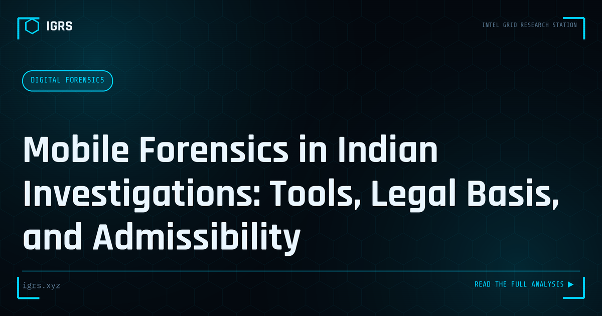

Mobile Forensics in Indian Investigations: Tools, Legal Basis, and Admissibility
| File No. | IGRS-016/2026 |
| Subject | Practical and legal guide to mobile phone forensics for Indian law enforcement |
| Category | Digital Forensics |
| Author | Manuj Kumar Pandey |
| Published | 2026-04-08 |
| Reading time | 12 minutes |
Mobile phones are the primary evidence source in most Indian criminal investigations. How extraction works, what tools are used, and how evidence holds up in court.
Mobile Forensics: The Heart of Modern Investigation
The smartphone has become the single richest source of evidence in criminal investigation. It holds communications, location history, financial transactions, photos, app data, and deleted content — a comprehensive record of a person's life. Mobile forensics, the science of extracting this evidence soundly, is central to cybercrime investigation in India. This guide covers the methodology, tools, and legal framework for mobile forensics in 2026.
Types of Mobile Extraction
| Extraction Type | What It Recovers |
|---|---|
| Logical | Active data via device APIs — contacts, messages, call logs |
| File system | App databases, more detailed data, some deleted content |
| Physical | Bit-for-bit image including unallocated space — most deleted data |
| Cloud | Synced data from associated cloud accounts |
The extraction type achievable depends on the device, OS version, and security state. Modern encrypted devices increasingly limit physical extraction, making file system and cloud extraction more important.
Mobile Forensics Tools in India
Indian agencies and FSLs use a mix of commercial and open-source tools:
- Cellebrite UFED — broad device coverage, cloud extraction
- MSAB XRY — clean reporting, strong analysis
- Oxygen Forensics — app data and cloud focus
- Magnet AXIOM — unified digital forensics
- ALEAPP/iLEAPP — free, for Android/iOS app data parsing
- MVT — Mobile Verification Toolkit for spyware detection
The Extraction Process
Sound mobile forensics follows a disciplined process: document the device state on seizure (make, model, IMEI, condition), isolate it from networks (Faraday bag or airplane mode) to prevent remote wiping, photograph and record everything, perform extraction using validated tools, compute hash values of the extraction, and maintain chain of custody throughout. Working on a forensic copy, never the original, is fundamental.
Recovering Deleted Data
One of mobile forensics' most valuable capabilities is recovering deleted content. Deleted messages, photos, and app data often persist in SQLite databases, unallocated space, backups, and cloud syncs. The recovery rate depends on the extraction type — physical extraction recovers the most — and on timing, since deleted data is eventually overwritten. Prompt seizure and extraction maximise recovery.
App Data Analysis
Modern investigations focus heavily on app data. WhatsApp, Telegram, Signal, payment apps, and social media store rich data in app databases. Even with end-to-end encryption protecting messages in transit, the decrypted data resides on the device and can be extracted. Payment app data reveals financial transactions, while location-aware apps provide movement history.
Cloud Extraction
As data increasingly lives in the cloud, cloud extraction has become essential. With the device credentials or proper legal process, investigators can access synced data from Google, Apple, and app-specific clouds — often recovering data no longer on the device itself. Cloud backups may contain historical data that the current device state does not.
Legal Framework and Admissibility
| Requirement | Provision |
|---|---|
| Device seizure | Section 94 BNSS |
| Evidence certificate | Section 63 BSA 2023 |
| Hash verification | Integrity proof at extraction |
Mobile forensic evidence must be accompanied by a Section 63 certificate, with hash values proving the extraction has not been altered. The chain of custody from seizure through extraction to court must be unbroken and documented.
Challenges in Modern Mobile Forensics
Mobile forensics faces growing challenges: full-disk encryption on modern devices, secure enclaves protecting keys, frequent OS updates that break extraction methods, and app-level encryption. These mean physical extraction is increasingly difficult, pushing investigators toward file system extraction, cloud data, and lawful access methods. Staying current with tool capabilities against the latest devices is an ongoing necessity.
Spyware and Stalkerware Detection
Mobile forensics also serves a defensive role — detecting spyware and stalkerware on victims' devices. The Mobile Verification Toolkit (MVT) and forensic analysis can identify known spyware indicators, unusual permissions, and malicious profiles. This is increasingly important in cases of domestic abuse and targeted surveillance.
Building Mobile Forensics Capability
Effective mobile forensics requires validated tools, sound process, legal knowledge, and continuous learning against evolving device security. For Indian investigators, combining commercial tools like Cellebrite and XRY with open-source options like ALEAPP and MVT, all within the BNSS and BSA framework, produces extractions that are both technically thorough and court-admissible. As smartphones remain central to both crime and daily life, mobile forensics will only grow in importance.